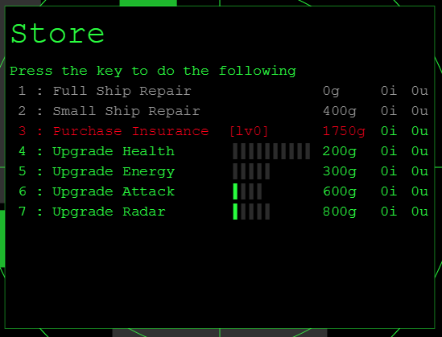
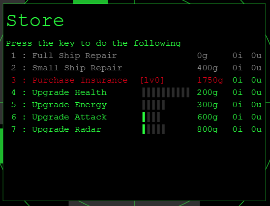
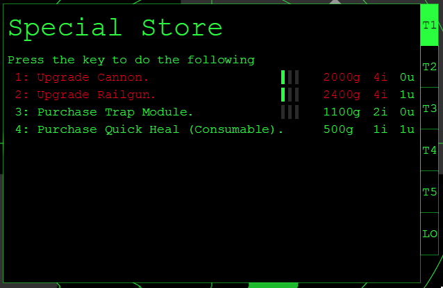
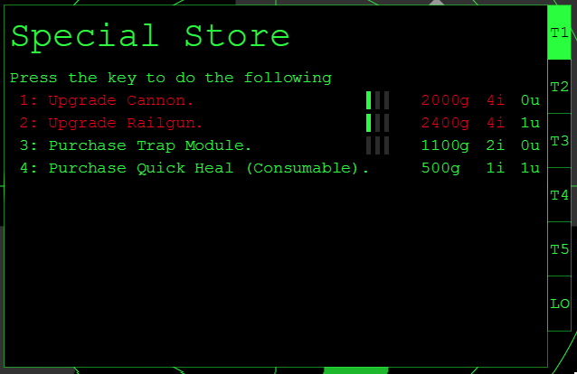
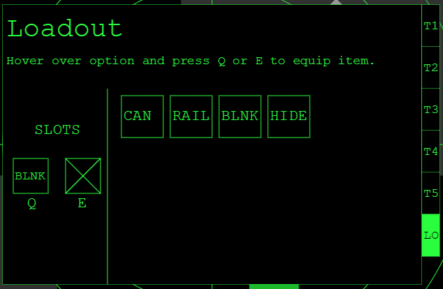

In this game, you command a private ship. There is treasure to be found and you can find it. Scan the area and loot your treasure. Send your gold on ship upgrades and Special actions. Fight your enemies and be wary of pirates. Dying could me losing a lot more than just your loot!
Welcome to [NAME PENDING]!
The Basics
Controls
Interface
This is the screen that you see when you start the game. Enter a name to begin.

This is the main view screen. You are always in the center of the screen. Everything operats on a grid in semi-realtime. The top bar is the round counter, and this tells you how long you have left in a round to put in your actions. The action queue are the actions that will happen this round. If you scan the area, loot will appear. Grab loot to get gold. The battle log is where all messages and chat is shown.

Rounds
The game operates on a global round counter. Every player has three action points to spend each round and three seconds to select them. Once the time is up, all actions will occur in the queue order. Empty queue slots are filled with "Hold" actions.
Dying
When you die, if you do not have insurance, you will drop all of your loot. In addition to this, all of your skills and items will decrease by a single level. You can respawn by pressing 'y'.
Shops
Shops are where you can purchase upgrades, repair your ship, and modify your ship. Every shop is surrounded by a safe zone. While in the safe zone you do not take damage, but you can also not attack. Press 'o' to open the shop.
Basic Shop
 

Special Shop
 

Inventory
| Item | Description | Cost | Source | ||||||||||||||||||||||||||||||||||||||||||||
|---|---|---|---|---|---|---|---|---|---|---|---|---|---|---|---|---|---|---|---|---|---|---|---|---|---|---|---|---|---|---|---|---|---|---|---|---|---|---|---|---|---|---|---|---|---|---|---|
| Attack Upgrade | Increases base attack damage. |
|
Basic Store | ||||||||||||||||||||||||||||||||||||||||||||
| Blink Module | Allows you click anywhere on screen and be transported to that location in just one action. |
|
Special Store | ||||||||||||||||||||||||||||||||||||||||||||
| Cannon | Deals damage to an area of impact on the map. |
|
Special Store | ||||||||||||||||||||||||||||||||||||||||||||
| Energy Module | Recharges the player's energy. |
|
Special Store | ||||||||||||||||||||||||||||||||||||||||||||
| Energy Upgrade | Increases base energy maximum. |
|
Basic Store | ||||||||||||||||||||||||||||||||||||||||||||
| Full Ship Repair | Completely repairs your ship. Scales with damage taken. |
|
Basic Store | ||||||||||||||||||||||||||||||||||||||||||||
| Health Upgrade | Increases base health maximum. |
|
Basic Store | ||||||||||||||||||||||||||||||||||||||||||||
| Insurance | Prevents loss of upgrades upon death 1 time. Upgrades decrease loot loss as well. |
|
Basic Store | ||||||||||||||||||||||||||||||||||||||||||||
| Insurance Upgrade | Decreases the amount of loot lost upon death when you have insurance. |
|
Special Store | ||||||||||||||||||||||||||||||||||||||||||||
| Loadout Upgrade | Tncreases the number of mod slots you are allowed. |
|
Special Store | ||||||||||||||||||||||||||||||||||||||||||||
| Quick Heal | Fully repairs the ship without needing to go to a shop. Consumed on use. |
|
Special Store | ||||||||||||||||||||||||||||||||||||||||||||
| Radar Upgrade | Increases the base radar range. |
|
Basic Store | ||||||||||||||||||||||||||||||||||||||||||||
| Railgun | Shoots in a straight line 10 units for high amounts of damage. |
|
Special Store | ||||||||||||||||||||||||||||||||||||||||||||
| Small Ship Repair | Repairs the ships health by 5 points. |
|
Basic Store | ||||||||||||||||||||||||||||||||||||||||||||
| Scanner Upgrade | Upgrades how long enemies will appear on screen once scanned and differentiates between more types of loot. |
|
Special Store | ||||||||||||||||||||||||||||||||||||||||||||
| Static Attack Module | Uses a mod slot and increases base attack by 1. |
|
Special Store | ||||||||||||||||||||||||||||||||||||||||||||
| Damage Resistance Module | Uses a mod slot and decreases all damage by 1. |
|
Special Store | ||||||||||||||||||||||||||||||||||||||||||||
| Static Energy Module | Uses a mod slot and increases the energy maximum by 5. |
|
Special Store | ||||||||||||||||||||||||||||||||||||||||||||
| Static Health Module | Uses a mod slot and increases the health maximum by 5. |
|
Special Store | ||||||||||||||||||||||||||||||||||||||||||||
| Static Radar Module | Uses a mod slot and increases base radar range. |
|
Special Store | ||||||||||||||||||||||||||||||||||||||||||||
| Stealth Module | Allows the player to become invisible to other players for a duration. |
|
Special Store | ||||||||||||||||||||||||||||||||||||||||||||
| Trap Module | Allows you to lay down invisible traps that prevent enemy players from moving. |
|
Special Store | ||||||||||||||||||||||||||||||||||||||||||||
| Uranium Carry Upgrade | Increases the amount of uranium you are able to carry. |
|
Special Store | ||||||||||||||||||||||||||||||||||||||||||||
| Uranium | Raw uranium resource. | 150 gold | Special Store |
Actions
Basic Actions
These actions are the base actions that every player is equipped with. No matter what modifications are added or how many deaths a player has, they will always be able to do these basic actions.
Attack
Attacking is the standard way of dealing damage in this game. Simply click on the screen where you would like to attack to deal damage in that location. Careful: you can damage yourself if you move into the spot that you attacked. Go to the Basic Shop to purchase attack upgrades.
| Level | Action Slots | Energy Cost | Uranium Cost | Damage |
|---|---|---|---|---|
| 1 | 1 | 1 | 0 | 1 |
| 2 | 1 | 1 | 0 | 2 |
| 3 | 1 | 1 | 0 | 3 |
| 4 | 1 | 1 | 0 | 4 |
Hold
When you don't want to act or you don't input any actions, a hold action takes place. This action represents your ship staying put for a moment. When you hold, you recover some energy. Use this action wisely.
Move
This action is how you travel. You can move North, South, East or West. Moving takes only one action spot, so you can move up to 3 spots per turn.
Loot
When you have discovered loot, this how you retrieve it. Looting makes you stationary for just a moment as it takes 2 actions and 3 energy to loot something. Make sure the area is clear before you try for some treasure.
Scan
Scanning is both how you find loot and keep track of your enemies. Scanning takes 5 energy and an entire round to complete. Once done, all treasure in your radar length will be revealed along with all enemies for a set number of turns. Higher levels of the scanner will maintain enemies on screen longer and differentiate loot as well. You can upgrade your scanner at the Special Shop.
| Level | Action Slots | Energy Cost | Uranium Cost | Loot Revealed | Enemy Revealed |
|---|---|---|---|---|---|
| 1 | 3 | 5 | 0 | Gold | 3 Rounds |
| 2 | 3 | 5 | 0 | Iron | 4 Rounds |
| 3 | 3 | 5 | 0 | Uranium | 5 Rounds |
Special Actions
Special Actions are actions acquired by modifying your ship. To acquire a Special action, you simply purchase it from the Special Shop. Every action works differently and most all of them require uranium to activate. So use them wisely.
Blink
Blink is purchasable from the Special Shop. To use, simply equip it to a mod slot and activate it. Once active, click on the screen where you would like to transport to. Upgrading the Blink Module will decrease the overall cost of using it.
| Level | Action Slots | Energy Cost | Uranium Cost |
|---|---|---|---|
| 1 | 1 | 10 | 1 |
| 2 | 1 | 8 | 1 |
| 3 | 1 | 6 | 1 |
Cannon
The cannon is purchasable from the Special Shop. To use, simply equip it to a mod slot and activate it. Once active, click on the screen where you would like to attack. All highlighted tiles will be effected by your damage. This is the idea weapon for hurting multiple targets or ensuring your target does not escape.
| Level | Action Slots | Energy Cost | Uranium Cost | Damage Multiplier | Area of Effect |
|---|---|---|---|---|---|
| 1 | 2 | 10 | 1 | 1x | 3x3 |
| 2 | 2 | 10 | 1 | 1x | 5x5 |
| 3 | 2 | 10 | 1 | 1.5x | 5x5 |
Destealth
The destealth action is a required action to take after attempting to perform an action that can not be performed while stealthed. To manually destealh, just activate stealth while stealthed to add a destealth action to the queue. Or perform another action to add it automatically.
Energy Module
The energy module is purchasable from the Special Shop. To use, simply equip it to a mod slot and activate it. You will recover energy after a single action. Note this requires uranium to active so be sure to have a stockpile around. Upgrading the Energy Module will increase the amount of energy recovered.
| Level | Action Slots | Uranium Cost | Energy Recovered |
|---|---|---|---|
| 1 | 1 | 1 | 5 |
| 2 | 1 | 1 | 10 |
| 3 | 1 | 1 | 15 |
Quick heal
The quick heal is purchasable from the Special Shop. To use, simply equip it to a mod slot and activate it. You will recover all health after a single action. This will consume the quick heal, so use it wisely.
Railgun
The railgun is purchasable from the Special Shop. To use, simply equip it to a mod slot and activate it. Once active, click on the screen where you would like to attack. This weapon attacks in a straight line from your current location. All highlighted tiles will be effected by your damage. This is the idea weapon for destroying single (and sometimes multiple) targets.
| Level | Action Slots | Energy Cost | Uranium Cost | Damage Multiplier | Range |
|---|---|---|---|---|---|
| 1 | 2 | 10 | 1 | 2x | 10 |
| 2 | 2 | 10 | 1 | 3x | 10 |
| 3 | 2 | 10 | 1 | 4x | 10 |
Stealth
The stealth module is purchasable from the Special Shop. To use, simply equip it to a mod slot and activate it. It will take an entire round to stealth, but once stealthed you will be removed from enemy scanners and be invisible to all enemies. They will need to scan again to find you. While stealthed you can move and scan freely. Any other action will require you to destealth first. After a set duration, you will automatically lose stealth. Upgrading your stealth increases this duration.
| Level | Action Slots | Energy Cost | Uranium Cost | Duration |
|---|---|---|---|---|
| 1 | 3 | 5 | 1 | 3 rounds |
| 2 | 3 | 10 | 1 | 6 rounds |
| 3 | 3 | 10 | 1 | 9 rounds |
Trap
The railgun is purchasable from the Special Shop. To use, simply equip it to a mod slot and activate it. You will place a trap where you are located. You are immune to your own traps, but not to enemy traps. Once an enemy enters a tile where a trap is located, it will activate and the player will be unable to move or blink for 3 rounds. You will also get a notification of which of your traps went off. So use this to your advantage. Upgrading your traps will increase the size and remove the uranium cost.
| Level | Action Slots | Energy Cost | Uranium Cost | Trap Size | Rounds Affected |
|---|---|---|---|---|---|
| 1 | 2 | 8 | 1 | 2x2 | 3 |
| 2 | 2 | 8 | 1 | 3x3 | 3 |
| 3 | 2 | 8 | 0 | 3x3 | 3 |
Editing Loadout
To edit your ship, you can go to one of the Special stores, and click the [Lo]adout tab. In this tab you can equip and unequip your items to modify your ship for whatever task you are trying to complete.
